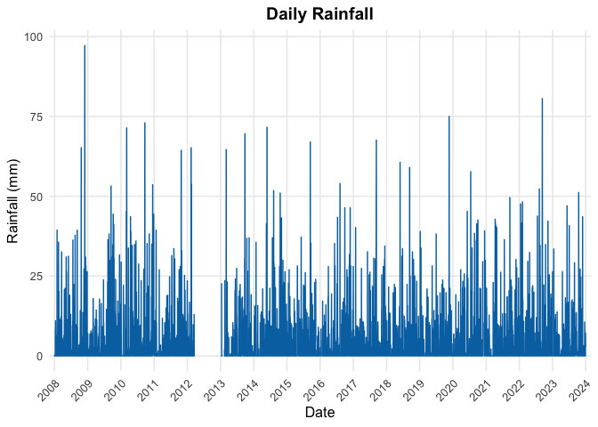

Overview
climecol provides a lightweight framework for reproducible climate–ecology data workflows. It helps researchers import, validate, summarize, and simulate weather and climate data for ecological or infectious-disease modeling.
Core features:
- Standardized import and validation of daily weather data
- Gap detection and imputation tools
- Fast photoperiod (daylength) calculations
- Simple seasonal curve fitting for temperature or photoperiod
- Stochastic rainfall sampling and scenario simulation
Full documentation and tutorials: 👉 https://jbaafi.github.io/climecol
Installation
Install the development version from GitHub:
# install.packages("devtools")
devtools::install_github("jbaafi/climecol")(Alternatively: pak::pak("jbaafi/climecol").)
Quick examples
library(climecol)
# Load sample weather data (Newfoundland, 2008–2023)
data(weather_nl)
# Validate
qa <- validate_weather(weather_nl)
qa$summary
#> # A tibble: 1 × 11
#> n_rows stations span_start span_end n_missing_dates n_negative_values
#> <int> <int> <date> <date> <int> <int>
#> 1 5844 2 2008-01-01 2023-12-31 0 0
#> # ℹ 5 more variables: n_tmax_lt_tmin <int>, n_temp_oob <int>,
#> # n_rain_gt_max <int>, n_snow_gt_max <int>, n_precip_inconsistent <int>
# Plot daily rainfall
plot_rainfall(weather_nl)
#> Warning: Removed 371 rows containing missing values or values outside the scale range
#> (`geom_col()`).
# Fit a simple seasonal temperature curve
fit <- fit_seasonal_temp(weather_nl, funcs = c("sin1","sin2"))
fit$metrics
#> # A tibble: 2 × 3
#> model AIC R2
#> <chr> <dbl> <dbl>
#> 1 sin1 1204. 0.971
#> 2 sin2 1159. 0.975Learn More:
See the pkgdown site for detailed guides:
Citation
If you use climecol in your research, please cite it as:
Baafi, J. (2025). climecol: Tools for Archiving and Analyzing Climate Data for Ecological Modeling. R package version 0.1.9. Available at: https://github.com/jbaafi/climecol